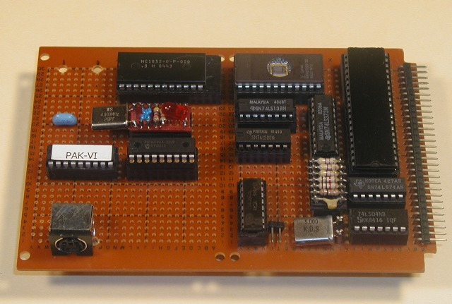

The system card is a fairly standard 1802 setup. A circuit remaps the 4K EPROM from the bottom of the address space (0x0000) to the top (0xF000) after the first access to an address in the upper block following a system reset. The circuit on the lower left side of the card replaces the original interface to an Apple parallel keyboard. A preprogrammed PIC PS2 keyboard decoder (PAK-VI) connected to a PIC 16F84 which acts as a serial to parallel converter connect to the original 1852 parallel IO port.
